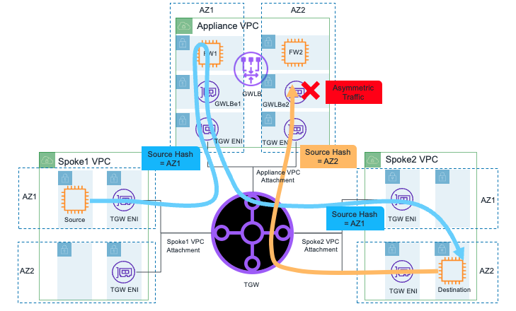
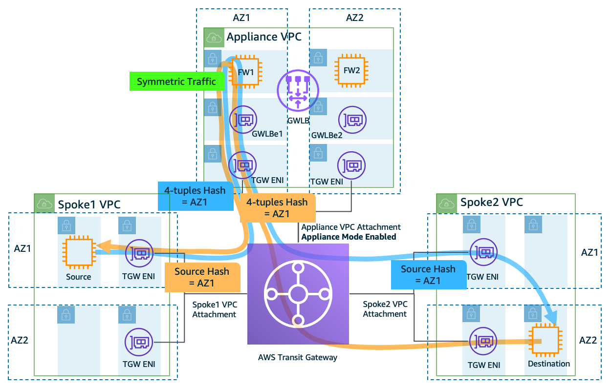
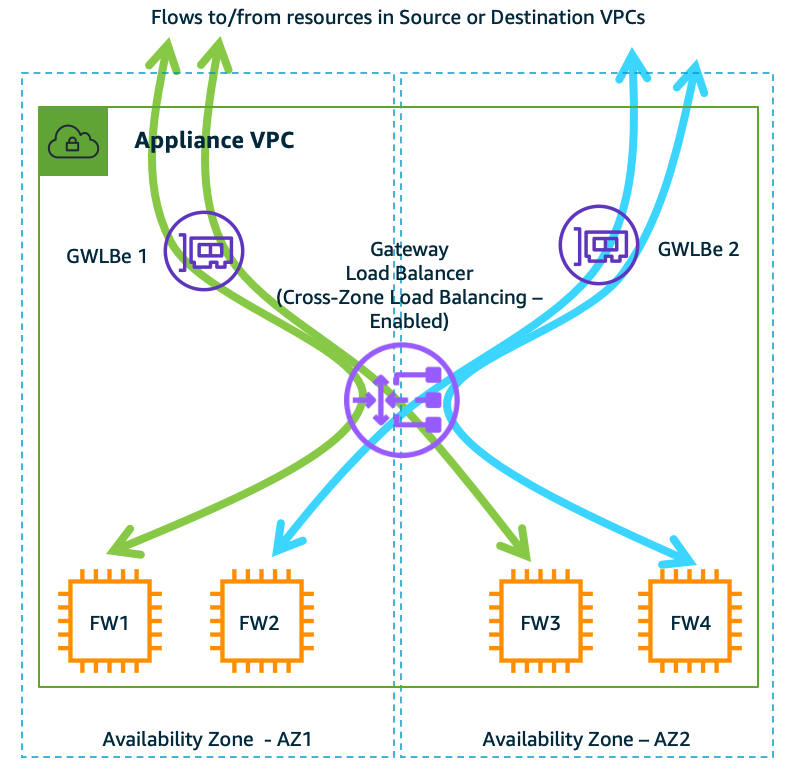
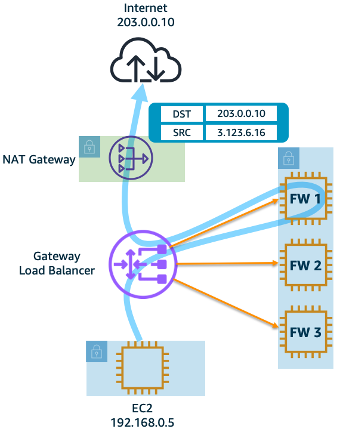
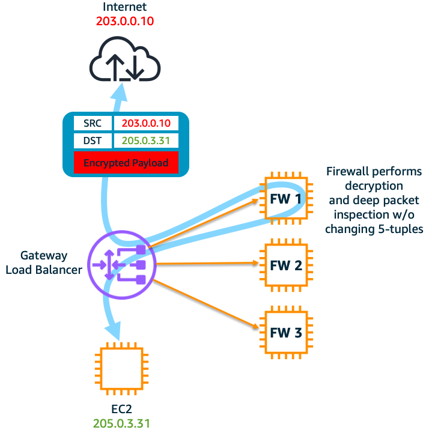
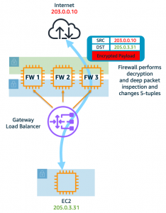

Result: Forward and return traffic use different GWLB endpoints and different firewalls
Why This Is a Problem:
Stateful firewalls need to see both directions of traffic flow
Asymmetric routing breaks stateful inspection
Security policies may not be properly enforced
The Solution:
Transit Gateway Appliance Mode ensures both directions of a flow use the same firewall
Traffic can cross AZs when needed to maintain symmetry
Enables proper stateful inspection and security policy enforcement

Figure: Asymmetric traffic flow when Transit Gateway Appliance Mode is disabled on the Appliance VPC attachment (default behavior)

Figure: Symmetric traffic flow when Transit Gateway Appliance Mode is enabled on the Appliance VPC attachment
Key Concepts
Traffic Flow Without Appliance Mode:
By default, Transit Gateway keeps traffic in the same AZ where it originated
Example: Traffic from VPC1 in AZ1 to VPC2 in AZ2 will use GWLB endpoint in AZ1 for outbound, but AZ2 for return traffic
This creates asymmetric routing where forward and return traffic use different firewall instances
Appliance Mode Benefits:
Ensures both directions of traffic flow through the same firewall instance
Maintains stateful inspection capability
Allows firewalls to see complete traffic flow (both directions)
Important Points to Remember
When to Use Appliance Mode:
Required: For VPC-to-VPC traffic inspection through security VPC
Optional: For Internet egress traffic inspection
Example: If Spoke VPC1 in AZ1 communicates with Spoke VPC2 in AZ2, enable Appliance Mode
Key Limitations:
Only one Transit Gateway can connect to the security VPC for guaranteed flow stickiness
Multiple Transit Gateways cannot share flow state information
Egress Traffic Considerations
Figure: Appliance Mode is disabled (default behavior) on the dedicated Internet egress Appliance VPC
Centralized Internet Egress:
For dedicated Internet Egress Appliance VPC:
No bidirectional traffic between VPC attachments exists
Appliance Mode is optional
When to Enable Appliance Mode for Egress:
When specific AZs generate more egress traffic than others
To prevent saturation of firewalls in specific AZs
To distribute traffic evenly across AZ firewalls
Summary of Appliance Mode for Different Traffic Types:
VPC-to-VPC traffic inspection: Required
Internet egress traffic inspection: Optional
Impact when enabled:
AZ affinity is no longer maintained
Traffic can cross AZs freely
No inter-AZ data transfer charges (as of April 2022)
Best Practices
Traffic Patterns:
For East-West traffic (VPC-to-VPC): Always enable Appliance Mode
For Internet egress: Consider enabling if you need to balance load across AZs
AZ Traffic Distribution:
Without Appliance Mode: Traffic stays in originating AZ
With Appliance Mode: Traffic can cross AZs for better distribution
Note: As of April 2022, no inter-AZ data transfer charges in this scenario
Exam Tips
Default Behavior:
Appliance Mode is disabled by default on Transit Gateway VPC attachments
Traffic naturally stays within source AZ without Appliance Mode
Asymmetric routing occurs when traffic crosses AZs
Configuration Scenarios:
Security VPC with stateful firewalls = Enable Appliance Mode
Internet egress only = Appliance Mode optional
Multiple Transit Gateways = Use single Transit Gateway for inspection
AWS Gateway Load Balancer (GWLB) Study Guide - Part 3
Topic: Cross-Zone Load Balancing

Figure: Typical deployment diagram of firewall with GWLB demonstrating how flows are distributed when cross-zone load balancing is enabled (disabled by default).
Introduction to the Problem
Background:
Organizations deploy multiple firewall instances across AZs for high availability
Traffic load may not be evenly distributed across these firewalls
Default behavior: GWLB distributes traffic only to targets within the same AZ
The Challenge:
Example scenario:
AZ1 has heavy traffic but only two firewall instances
AZ2 has light traffic but five firewall instances
Result: AZ1 firewalls are overloaded while AZ2 firewalls are underutilized
Additional risk: If all firewalls in one AZ fail, traffic in that AZ has nowhere to go
Why This Is a Problem:
Inefficient use of firewall resources
Potential performance bottlenecks in busy AZs
Limited failure recovery options within single AZ
Cost implications of maintaining excess capacity in each AZ
The Solution:
Cross-Zone Load Balancing allows traffic distribution across all AZs
Provides better resource utilization and high availability
Trades off potential inter-AZ data transfer costs for improved reliability
Key Concepts
Default Behavior (Cross-Zone Disabled):
Traffic stays within source AZ
Even distribution only among targets in same AZ
No inter-AZ data transfer costs
Cross-Zone Enabled Behavior:
Traffic can flow to any healthy target in any AZ
Even distribution across ALL healthy targets
Incurs inter-AZ data transfer charges
Important Points to Remember
High Availability Scenarios:
Without Cross-Zone: If all targets in an AZ fail, traffic in that AZ fails
With Cross-Zone: Traffic automatically routes to healthy targets in other AZs
Cost Considerations:
Standard inter-AZ data transfer charges apply when enabled
Trade-off between cost and availability/performance
Best Practices
When to Enable Cross-Zone Load Balancing:
When high availability is more important than data transfer costs
When workload distribution across AZs is uneven
When you can't maintain sufficient capacity in each AZ
When to Keep it Disabled:
When you have sufficient capacity in each AZ
When minimizing costs is a priority
When traffic patterns are predictably distributed across AZs
Exam Tips
Default Settings:
Cross-Zone Load Balancing is disabled by default
Each AZ's traffic stays within that AZ by default
Key Decision Factors:
High Availability requirements vs Cost optimization
Traffic distribution patterns across AZs
Capacity planning requirements
Failure Scenarios:
Single target failure: Traffic routes to other targets in same AZ
All targets in AZ failure: Behavior depends on Cross-Zone setting
AZ failure: Traffic in other AZs remains unaffected
AWS Gateway Load Balancer (GWLB) Study Guide - Part 4
Topic: Understanding Appliance and AZ Failure Scenarios
Introduction to the Problem
Background:
Security appliances (firewalls) can fail for various reasons
Entire Availability Zones can experience issues
Organizations need to understand how GWLB handles these failures
Unlike other AWS load balancers, GWLB handles failures differently due to its stateful nature
The Challenge:
Example scenario:
10 firewalls handling traffic, one fails
Existing connections through failed firewall need handling
New connections need proper distribution
Result: 10% of traffic is impacted for up to 70 seconds
Why This Is Important:
Application availability depends on proper failure handling
Different failure types require different recovery approaches
Recovery time impacts user experience
Key Concepts
Types of Failures:
Single firewall failure in an AZ
All firewalls failing in an AZ
Complete AZ failure
Recovery Timings:
Health check interval: Minimum 10 seconds
Minimum threshold: 2 checks
Backend detection time: 50-60 seconds
Total time to reroute: Up to 70 seconds
Important Points to Remember
Existing Flow Behavior:
GWLB operates in fail-open mode
Existing flows stay mapped to failed target until timeout
No immediate termination or reset signal sent
New Flow Behavior:
After target is marked unhealthy, new flows wait up to 70 seconds before rerouting
Distribution depends on cross-zone load balancing setting
Failure Scenarios and Outcomes
Single Firewall Failure (Cross-Zone Disabled):
Existing flows: Continue until timeout
New flows: Route to healthy targets in same AZ
Single Firewall Failure (Cross-Zone Enabled):
Existing flows: Continue until timeout
New flows: Route to any healthy target in any AZ
All Firewalls in AZ Failure (Cross-Zone Disabled):
Existing flows: Dropped until target restoration
New flows: Dropped until target restoration
All Firewalls in AZ Failure (Cross-Zone Enabled):
Existing flows: Continue until timeout
New flows: Route to healthy targets in other AZs
AZ Failure:
Flows in other AZs: Continue unaffected
GWLB endpoints in other AZs: Continue operating normally
Failure scenario
Cross-zone Load balancing
Existing flows
New flows
One of the FW fails in the AZ
Disabled
Timeout or need reset from client
Sent to healthy targets in the same AZ
One of the FW fails in the AZ
Enabled
Timeout or need reset from client
Sent to healthy targets in the same or across AZs
All of the FWs fail in the AZ
Disabled
Timeout or dropped until at least one target is restored
Timeout or dropped until at least one target is restored
All of the FWs fail in the AZ
Enabled
Timeout or need reset from client
Sent to healthy targets across AZs
One of the AZ fails in an AWS Region
Disabled or Enabled
Flows going through other AZs are not impacted
Flows going through other AZs are not impacted
Table: The table above summarizes various failure scenarios with existing and new flows on an GWLB
Exam Tips
Recovery Times:
Know the 70-second maximum rerouting time
Understand components: health checks (20s) + backend detection (50s)
Impact Assessment:
Single firewall failure impact = 1/(total firewalls) of traffic
Two-Arm Mode: Firewall handles both inspection and NAT
Key Concepts
One-Arm Mode:
Firewall has single network interface
Firewall only performs inspection
AWS NAT Gateway handles address translation
Most common deployment method
Two-Arm Mode:
Firewall has two network interfaces
One interface in private subnet
One interface in public subnet
Firewall handles both inspection and NAT
The firewall is deployed in one-arm mode just for traffic inspection whereas NAT Gateway performs translation. This is the most common deployment method, and eliminates dependency on firewall supporting NAT functionality. Also, it increases performance of the firewall by offloading NAT to NAT Gateway.
The firewall is deployed in two-arm mode and performs both inspection as well as NAT. Some AWS partners provide firewall with NAT functionality. GWLB integrates seamlessly in such deployment mode. You don’t need to do any additional configuration changes in the GWLB. However, the firewall networking differs – one network interface is on the private subnet and the other is on public subnet. This mode requires software support from the firewall partner. Some of the GWLB partners (Palo Alto Networks, Valtix) support this feature, however consult with an AWS partner of your choice before using this mode.

Figure: One-arm firewall deployment – The firewalls are just for traffic inspection whereas NAT Gateway is performing translation.
Figure: Two-arm FW deployment – The firewalls (in two-arm mode) perform both inspection and translation.
Important Points to Remember
One-Arm Benefits:
Simpler configuration
Better firewall performance (NAT offloaded)
No dependency on firewall NAT capabilities
Uses standard AWS NAT Gateway features
Two-Arm Considerations:
Requires firewall vendor NAT support
More complex network configuration
Firewall handles additional NAT workload
Supported by specific partners (e.g., Palo Alto Networks, Valtix)
Best Practices
When to Choose One-Arm:
When simplicity is priority
When using standard AWS NAT features is sufficient
When optimizing firewall performance
When firewall NAT capability isn't needed
When to Choose Two-Arm:
When advanced NAT features from firewall are needed
When using supported firewall vendors with NAT capabilities
When consolidated management of inspection and NAT is preferred
Exam Tips
Architecture Differences:
One-Arm: Single interface, separate NAT Gateway
Two-Arm: Dual interfaces, integrated NAT
Key Decision Factors:
Simplicity vs. Advanced NAT features
Firewall vendor capabilities
Performance requirements
Management preferences
Implementation Notes:
No special GWLB configuration needed for either mode
Vendor support verification needed for two-arm mode
Consider NAT Gateway costs vs. firewall NAT licensing
AWS Gateway Load Balancer (GWLB) Study Guide - Part 6
Topic: One-Arm vs Two-Arm Firewall Deployment for SSL/TLS Inspection
Introduction to the Problem
Background:
Most modern traffic is encrypted using SSL/TLS
Security teams need to inspect encrypted traffic for threats
GWLB is transparent and doesn't handle SSL/TLS termination
Firewalls must perform decryption for deep packet inspection
The Challenge:
Example scenario:
HTTPS traffic needs inspection for security threats
Traffic must be decrypted, inspected, then re-encrypted
Original connection parameters may or may not need preservation
Available Solutions:
One-Arm Mode: Preserve original connection parameters
Two-Arm Mode: Allow connection parameter changes
Key Concepts
One-Arm SSL/TLS Mode:
Single network interface on firewall
Maintains original 5-tuple (source/destination IP, ports, protocol)
Decrypt → Inspect → Re-encrypt with same parameters
Two-Arm SSL/TLS Mode:
Two network interfaces on firewall
Can modify connection parameters
Flows on each arm can have different 5-tuples
Important Points to Remember
GWLB's Role:
Acts as transparent bump-in-the-wire
Does not terminate SSL/TLS
Does not perform SSL offloading
Passes encrypted traffic to firewall
Firewall Requirements:
Must support SSL/TLS decryption
Must handle certificate management
Must perform deep packet inspection
The firewall is deployed in one-arm mode and GWLB passes through encrypted traffic. During the packet inspection process, the firewall decrypts and re-encrypts without changing the original 5-tuple (source/destination IP, source/destination port and protocol).
The firewall is deployed in two-arm mode. The traffic enters firewall encrypted, which then gets decrypted and inspected before being sent to Internet or vice-versa. In this mode, the 5-tuple of two flows on the two arms of the firewalls do not have to match. Some of the GWLB partners that support this feature are Check Point, Palo Alto Networks, and Trend Micro. However, consult with an AWS partner of your choice before using this mode.

Figure: The firewall, in one-arm mode, decrypts and re-encrypts before sending traffic out to Internet and vice-versa.

Figure: The firewall, in two-arm mode, decrypts and encrypts before sending traffic out to Internet and vice-versa.
Best Practices
When to Choose One-Arm:
When original connection parameters must be preserved
When simpler network architecture is preferred
When tracking original flow information is important
When to Choose Two-Arm:
When connection parameters can be modified
When using supported vendors (Check Point, Palo Alto Networks, Trend Micro)
When more flexible SSL/TLS handling is needed
Vendor Support
Two-Arm Mode Support:
Check Point
Palo Alto Networks
Trend Micro
Verify with vendor for specific capabilities
Exam Tips
Key Differences:
One-Arm: Preserves connection parameters
Two-Arm: Allows parameter modification
GWLB: Always transparent, never terminates SSL
Architecture Considerations:
Understand GWLB's passive role in SSL/TLS handling
Know which vendors support two-arm mode
Remember impact on connection tracking
Implementation Notes:
Firewall must handle all SSL/TLS operations
Certificate management happens at firewall level
Consider compliance requirements for SSL/TLS inspection